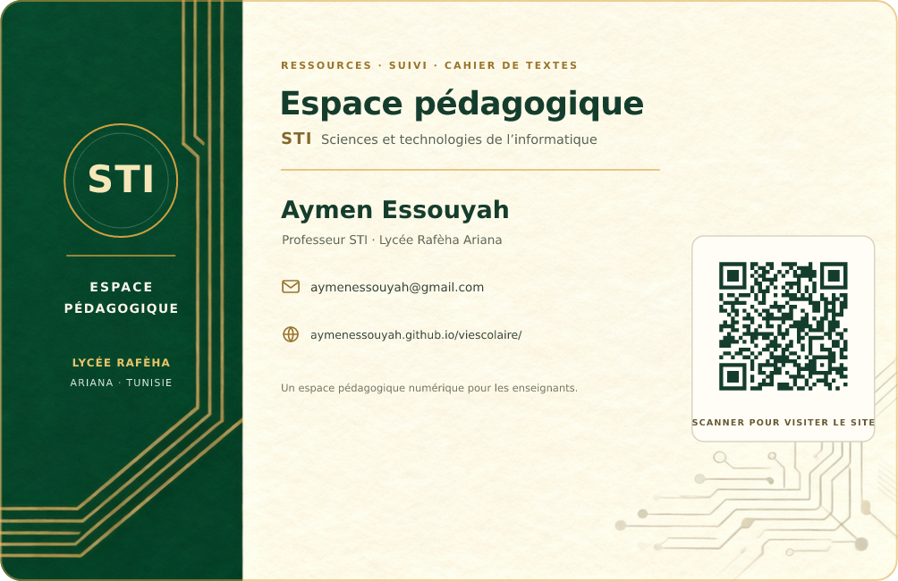

À PARTAGER
Carte de visite du site
Présentez l’Espace pédagogique STI et partagez son adresse avec un QR code.



Présentez l’Espace pédagogique STI et partagez son adresse avec un QR code.

À la création du compte, renseignez le nom et choisissez une photo. Le badge sera lié à l’identifiant Supabase du professeur ; les photos restent privées.
Chargement…
Touchez l'élève à pointer (ou dictez son nom), puis appuyez sur le micro et dites « absent », « exclu », « sorti », « entrée par billet », « présent » ou « retard ».
Votre badge utilise votre portrait et vos informations professionnelles. La photo est enregistrée dans un espace privé Supabase, accessible uniquement par votre compte. Tracez votre signature au doigt ou à la souris : elle sera conservée dans votre profil et ajoutée à la fin de chaque journée du cahier de textes.
Après votre accord, les copies datées de vos données professeur sont enregistrées dans le Drive que vous choisissez. Elles restent conservées dans votre historique Drive.
Vos fiches de séance et vos horaires sont enregistrés dans votre base Supabase, protégée par un compte unique. Connectez-vous une fois par appareil : la session reste ouverte ensuite.
Ici on saisit votre identité (adresse + mot de passe). L'URL du projet, la clé, la table et le nom de l'appareil se règlent dans Réglages avancés — normalement déjà remplis.
Les comptes professeurs sont créés par l’administrateur avec leur badge et leur photo. Utilisez ici l’adresse et le mot de passe provisoire qui vous ont été remis.
Après validation de votre lien Supabase, choisissez un nouveau mot de passe pour votre compte professeur.
Renseignez l'URL de votre projet Supabase et sa clé publique (anon). Conservez votre base existante. La synchronisation bidirectionnelle nécessite le script installation/synchronisation-atomique.sql et un accès protégé par compte. Consultez MISE_A_JOUR_STI.md.